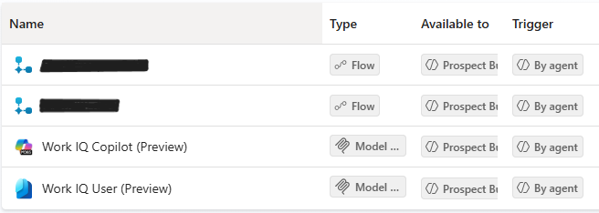
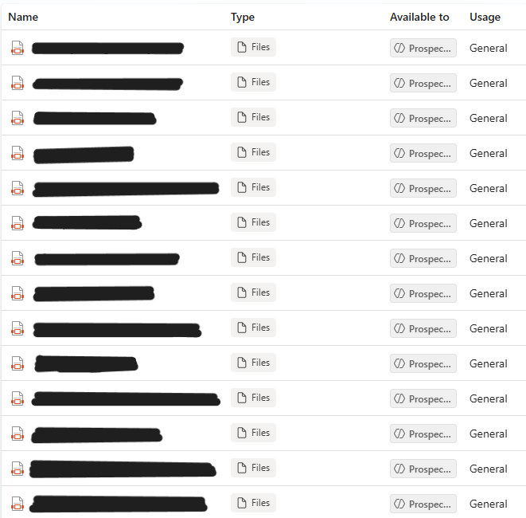
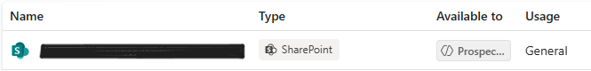

The Problem
Client-facing staff preparing for prospect meetings did research ad hoc, with inconsistent depth and quality across the team. Preparation was time-consuming and varied by individual, making it hard to walk into a first meeting consistently well-informed about a prospect's business, industry dynamics, and the right discovery questions to ask.
What I Built
A Copilot Studio agent that guides a user through a structured intake conversation, enriches the gathered information from multiple grounded sources, and generates a complete four-part preparation package delivered by email. It standardizes meeting preparation across the team while keeping output advisor-led and consultative rather than product-driven.
How It Works
- Multi-phase execution model: the agent operates in explicit gated phases (intake, generation, storage, delivery). No artifacts generate until intake validation confirms all required fields are present.
- Conversational intake with error correction: collects business name, city, state, and owner, with built-in correction handling to catch typos before they propagate into research.
- Custom agent flow used as a tool: the user supplies two company web addresses, and a purpose-built flow retrieves and parses additional HTML content from those pages, enriching business context beyond what standard web search returns.
- Multiple orchestrated grounding sources: SharePoint knowledge, uploaded reference documents, industry and regional data sources, the custom flow output, and web search, combined into a single generation step.
- Global variable state management: the complete generated response is captured verbatim into a global variable for downstream use, unedited.
- Automated email delivery: dedicated topics and a flow deliver the finished package to the user.
- Output formatting constraints: output is structured with headings, paragraphs, and bullets, deliberately avoiding tables because the final artifact renders as a Word document delivered by email.



Generated Output
The agent produces four distinct, self-contained artifacts in order:
- A. One-page executive summary of the company research and analysis
- B. Comprehensive industry summary and company research & analysis
- C. Initial 60-minute prospect meeting preparation, including ten industry-specific discovery questions
- D. Follow-up meeting preparation
Impact
- Standardizes prospect research quality across the team
- Reduces manual preparation time per prospect
- Ensures staff enter meetings grounded in industry-specific context with tailored discovery questions
- Delivers a consistent, repeatable artifact rather than ad hoc notes